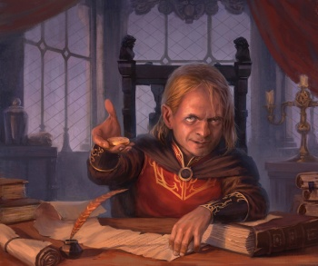
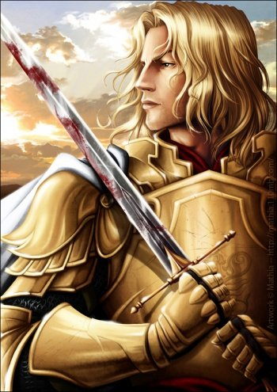
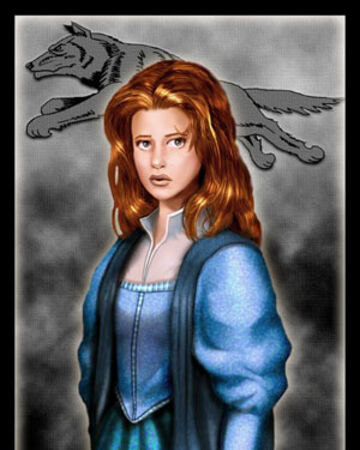
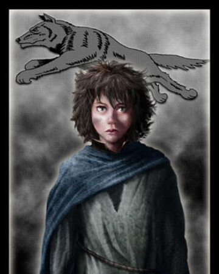

Nacio en 273 d.C. en Roca Casterly, Tyrion fue el tercer hijo de Lord Tywin Lannister y Lady Joanna Lannister. Tuvo dos hermanos mayores, los gemelos Jaime y Cersei, quienes tenían nueve años a su nacimiento. Su madre murió durante el parto, dejando a su padre devastado y enfurecido con Tyrion, a quien acusa de ser el causante de la muerte de Lady Joanna y desprecia por ser deforme. Tyrion se encontró marginado de la vida regular de una familia, especialmente por parte de su padre y hermana, quienes abusaron psicológicamente de él durante su infancia.
Jaime y su hermana gemela Cersei eran inseparables en su infancia, llegando incluso a experimentar sexualmente en su niñez. Durante uno de estos encuentros, fueron vistos por una doncella que informó a su madre. Las habitaciones de Jaime fueron inmediatamente movidas al otro lado del castillo y ambos fueron advertidos de no volver a hacerlo jamás.
Sansa fue criada para ser una dama, aprendiendo y poseyendo naturalmente todas las gracias tradicionalmente femeninas, con un interés marcado en la música, la poesía, el canto, la danza y el bordado. En su juventud tenía nociones románticas ingenuas sobre príncipes gallardos, caballeros honorables y amor verdadero, tal como los describían las historias y canciones. No tuvo una buena relación con su hermana Arya, cuyos intereses eran totalmente opuestos a los de Sansa. Adora los pastelillos de limón, y es devota de la Fe de los Siete, esto último al contrario que casi toda su familia.
Arya ha pasado toda su vida en Invernalia, aunque ha acompañado a su padre en dos ocasiones a Puerto Blanco. Arya ha sido educada bajo la tutela de la septa Mordane para ser una dama, y también ha recibido lecciones del maestre Luwin. A Arya también se le ha enseñado a montar a caballo, pero debido a ser llamada Arya Caracaballo por Jeyne Poole, y debido a su aspecto Stark, no podía disfrutar el hecho de que los caballos de equitación fuese una de las pocas cosas en que era mejor en que su hermana mayor. Otros en Invernalia la llamarían Arya Entrelospiés. Lord Eddard Stark a menudo comía en la misma sala con su personal, y siempre mantenia un asiento reservada para ella junto a el. Invitaba a un miembro diferente de su personal a comer con él cada noche, y a Arya le encantaba escuchar las historias de estas personas.